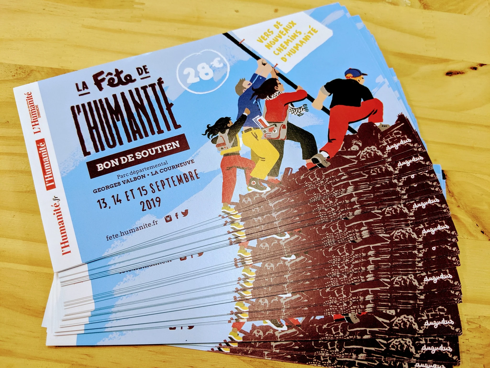

Publication d’archives
Les places pour la fête de l'humanité sont arrivées à la fédération !
Date indiquée par Facebook · 13 mai 2019
Texte conservé avec la publication
Contexte du dossier
Le 20 mai 2018, le Red Social Club annonce un débat sur Mai 68, accompagné d’un repas auquel chacun apporte sa part. En mai 2019, l’arrivée des places de la Fête de l’Humanité à la fédération est signalée aux adhérents et amis. Ces courts messages éclairent des pratiques concrètes : rendre le débat accueillant, partager plutôt que consommer chacun de son côté, préparer ensemble une rencontre politique et culturelle. Ils donnent à l’éducation populaire une forme quotidienne. Le texte ne fournit toutefois ni bilan de cette soirée ni fréquentation de la fête.

Sources
Archive rouge · export Facebook · AR-0002-FB-02089
À lire aussi · #Qatar2022 « Je comprends ces mouvements de boycott. Mais c’est trop tard, il fallait se révolter il y a 12…